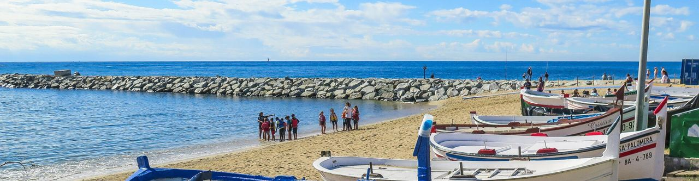

Ruta · Mataró
Els límits septentrionals del municipi tenen també un espai a considerar. Es tracta de la cornisa que separa el municipi de Mataró del de Dosrius. Aquesta carena, que forma part de la Serralada…